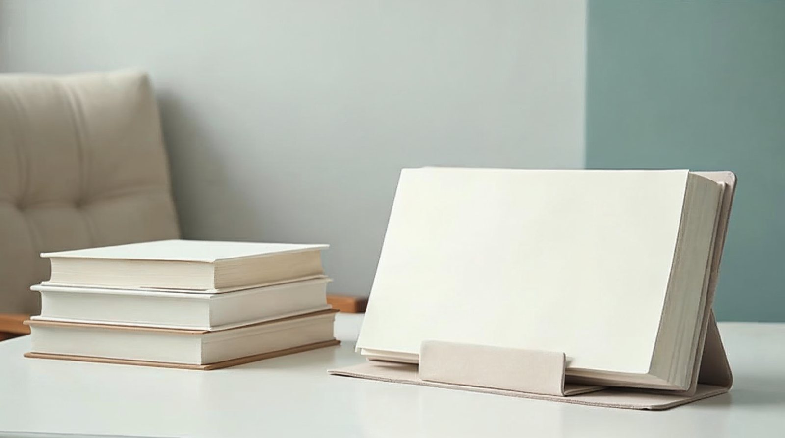
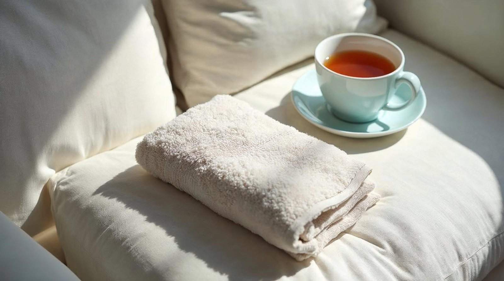
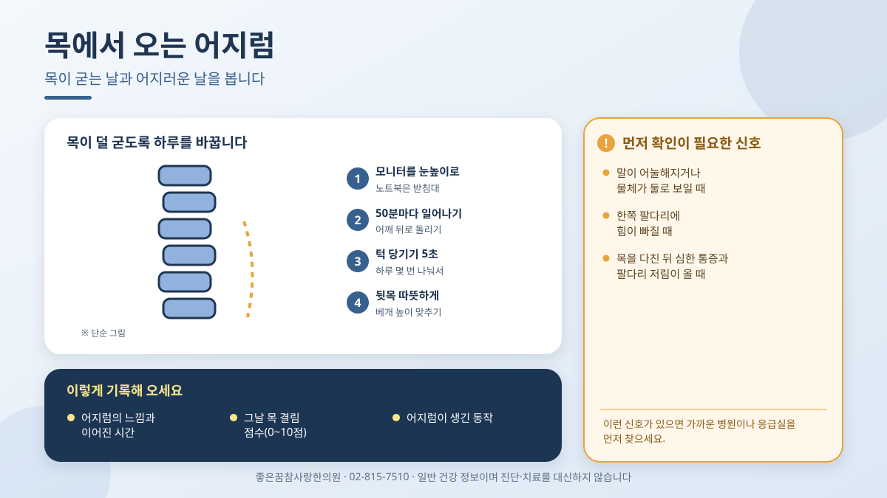

이종호 한의사 감수좋은꿈참사랑한의원 대표원장 (한의사 면허번호 19769)발행 2026-11-26 · 수정 2026-11-26
이 글의 차례
마감 주간 내내 노트북 앞에 고개를 숙이고 있었습니다. 저녁이 되자 뒷목이 돌덩이처럼 굳고, 고개를 돌리면 머리가 띵하면서 바닥이 살짝 기우는 것 같습니다. 세상이 빙빙 도는 것은 아닌데, 배에 탄 것처럼 몸이 둥둥 뜨는 느낌이 하루 종일 따라다닙니다.
진료실에서 이런 어지럼을 말씀하시는 분이 적지 않습니다. 이비인후과에서 귀 검사를 받았는데 큰 이상이 없다고 들었고, 이석증도 아니라고 하는데 어지럼은 여전하다고 하십니다. 그럴 때 저는 목을 먼저 만져 봅니다. 목과 어깨가 단단하게 굳어 있는 경우가 많기 때문입니다.
목에서 오는 어지럼, 흔히 경추성 어지럼이라고 부르는 불편은 아직 의학적으로도 정의가 깔끔하게 정리되지 않은 영역입니다. 다른 원인을 먼저 살핀 뒤, 목의 상태와 어지럼이 함께 움직이는지를 보며 조심스럽게 짐작하는 경우가 많습니다.
그래서 이 글에서는 목과 어지럼이 왜 이어질 수 있는지, 이석증이나 다른 어지럼과는 어떻게 다른지, 진료실에서는 무엇을 살피고 생활에서는 무엇을 해 볼 수 있는지를 차근차근 정리했습니다.
목에서 오는 어지럼은 어떤 느낌인가요?
목에서 오는 어지럼은 세상이 빙빙 도는 회전성 어지럼보다는 머리가 띵하고 무거우며, 몸이 흔들리거나 떠 있는 듯한 느낌으로 말씀하시는 경우가 많습니다. 걸을 때 중심이 살짝 흔들리는 것 같다고 표현하시기도 합니다.
특징은 목의 불편과 함께 움직인다는 점입니다. 뒷목이 뻐근하고 아픈 날에 어지럼도 심하고, 목이 풀린 날에는 어지럼도 덜합니다. 고개를 오래 한 자세로 두었거나, 고개를 돌리고 젖히는 동작에서 어지럼이 따라오기도 합니다.
어지럼이 수십 초 만에 끝나는 짧은 발작이라기보다, 몇 시간에서 하루 종일 은근하게 이어지는 경우가 많습니다. 뒷머리가 조이는 두통, 어깨 결림, 눈의 피로가 함께 있는 분도 흔합니다.
왜 목이 굳으면 어지러울 수 있을까요
우리 몸은 균형을 잡을 때 귀 속의 평형 기관, 눈으로 보는 정보, 그리고 몸의 관절과 근육이 보내는 위치 정보를 함께 씁니다. 이 세 가지가 서로 맞아떨어질 때 우리는 어지럽지 않고 똑바로 서 있다고 느낍니다.
목의 위쪽 관절과 작은 근육들에는 머리가 어느 방향을 향하고 있는지를 알려 주는 감각 수용체가 아주 많습니다. 목이 오래 굳어 있거나 다쳐서 이 신호가 흐트러지면, 귀와 눈이 보내는 정보와 서로 어긋나면서 어지럼으로 느껴질 수 있다고 설명합니다.
교통사고로 목이 앞뒤로 크게 흔들린 뒤, 또는 오랫동안 고개를 앞으로 내민 자세로 일한 뒤에 이런 어지럼을 말씀하시는 분이 많은 것도 이 때문으로 봅니다. 다만 목이 굳었다는 것만으로 어지럼의 원인을 단정할 수는 없어서, 다른 원인을 먼저 살펴보는 과정이 꼭 필요합니다.
이석증이나 다른 어지럼과는 무엇이 다른가요
이석증은 누웠다 일어나거나 돌아누울 때처럼 머리의 위치가 바뀌는 순간 세상이 빙글 도는 어지럼이 수십 초 정도 짧게 오는 것이 특징입니다. 목에서 오는 어지럼은 도는 느낌보다 둥둥 뜨는 느낌이 많고, 목의 굳음과 함께 오래 이어지는 경우가 많습니다.
메니에르병은 귀가 먹먹하고 소리가 울리는 느낌과 함께 몇 시간씩 빙빙 도는 어지럼이 옵니다. 전정신경염은 감기 뒤 며칠씩 심하게 도는 어지럼이 이어집니다. 앉았다 일어설 때만 잠깐 핑 도는 것은 혈압이 순간 내려가는 기립성 어지럼을 먼저 생각합니다.
이런 어지럼들이 목의 굳음과 함께 있는 경우도 많아서 혼자 나누기는 쉽지 않습니다. 그래서 어지럼이 처음 생겼거나 양상이 달라졌다면 이비인후과나 신경과에서 귀와 뇌의 원인을 먼저 확인하고, 목에서 오는 부분은 그다음에 함께 살피는 순서를 권합니다.

목을 굳게 만드는 하루의 자세
진료실에서 목이 굳은 분들의 하루를 여쭤 보면 비슷한 장면이 많습니다. 노트북 화면을 내려다보며 몇 시간씩 일하고, 출퇴근길에는 휴대폰을 보고, 집에 와서는 소파에 기대 다시 화면을 봅니다. 하루 대부분을 고개를 앞으로 숙인 채 지냅니다.
머리는 생각보다 무겁습니다. 고개가 앞으로 나갈수록 목 뒤 근육은 그 무게를 붙잡느라 계속 힘을 쓰게 되고, 저녁이면 단단하게 굳습니다. 높은 베개를 베고 자거나 엎드려 자는 습관이 있으면 밤사이에도 목이 쉬지 못합니다.
어깨를 움츠리는 긴장도 목을 굳게 합니다. 바쁜 일정에 쫓기거나 마음이 불안하면 어깨가 귀 쪽으로 올라가고 숨이 얕아집니다. 목과 어깨의 긴장, 얕은 숨, 어지럼이 한꺼번에 묶여 오는 경우를 자주 봅니다.
어지럼이 있을 때 일상에서 조심할 것
어지럼이 있는 날에는 갑자기 고개를 크게 젖히거나 돌리는 동작을 피하세요. 높은 선반의 물건을 꺼내거나 천장을 올려다보며 일하는 것도 잠시 미루는 편이 좋습니다. 일어설 때는 한 박자 쉬고 천천히 움직여 보세요.
운전을 하실 때 어지럼이 심하다면 그날은 운전을 쉬어 가시길 권합니다. 계단에서는 난간을 잡고, 어두운 곳에서는 조명을 켜 두세요. 눈으로 보는 정보가 줄어들면 균형을 잡기가 더 어려워집니다.
어지럽다고 목을 아예 움직이지 않으면 오히려 더 굳을 수 있습니다. 아프지 않은 범위 안에서 천천히 움직여 주는 것이 좋고, 목을 세게 꺾거나 우두둑 소리가 나도록 비트는 동작은 피하시는 것이 좋습니다.
사고나 부딪힘 뒤에 생긴 어지럼이라면
교통사고로 몸이 앞뒤로 크게 흔들렸거나, 넘어지며 머리와 목을 부딪힌 뒤에 어지럼이 생겼다면 먼저 병원에서 머리와 목의 손상이 없는지 확인을 받으셔야 합니다. 그 확인을 마친 뒤에도 목의 뻣뻣함과 어지럼이 이어진다면 목에서 오는 부분을 함께 살펴봅니다.
사고 직후에는 놀란 마음에 몸의 불편을 잘 느끼지 못하다가, 며칠이 지나서 목이 굳고 어지럼이 올라오는 경우도 흔합니다. 언제부터 어떤 불편이 생겼는지 날짜별로 적어 두시면 진료 방향을 정하는 데 도움이 됩니다.
날씨와 컨디션에 따라 달라지는 어지럼
찬바람이 부는 날 어깨를 움츠리고 다니면 목과 어깨가 더 굳어 어지럼이 심해졌다고 말씀하시는 분이 많습니다. 겨울에는 목도리로 목을 감싸 따뜻하게 지키는 것만으로도 하루의 굳음이 덜할 수 있습니다.
잠을 설친 다음 날, 끼니를 거른 날, 커피를 여러 잔 마신 날에도 어지럼이 더 쉽게 올라옵니다. 몸 전체의 여유가 줄면 작은 목의 불편에도 균형 감각이 더 쉽게 흔들리기 때문입니다. 목만이 아니라 하루의 리듬을 함께 보는 이유가 여기에 있습니다.
긴장과 불안도 어지럼을 키웁니다. 어지럼이 또 올까 걱정되면 몸이 굳고, 굳은 몸은 다시 어지럼을 부릅니다. 어지럼이 왔을 때 '목이 굳어서 그렇구나' 하고 이유를 알고 있으면 불안이 조금 덜해지고, 그만큼 몸도 덜 굳습니다.
먼저 이렇게 여쭙니다
처음 오시면 저는 대략 이런 순서로 여쭙니다. 미리 떠올려 오시면 이야기가 훨씬 수월해집니다.
- 어지럼은 빙빙 도나요, 둥둥 뜨나요, 핑 도나요?
- 목이 뻐근하거나 아픈 날과 어지러운 날이 겹치나요?
- 고개를 돌리거나 숙이거나 젖힐 때 더 심해지나요?
- 교통사고나 목을 다친 적이 있나요?
- 하루에 화면을 보는 시간과 자세는 어떤가요?
- 귀 먹먹함, 이명, 두통, 눈의 피로가 함께 있나요?
- 이비인후과나 신경과에서 받은 검사가 있나요?
이 질문들에 답하다 보면 어지럼이 목과 함께 움직이는지, 다른 원인을 먼저 살펴야 하는지가 조금씩 보입니다. 기억이 정확하지 않아도 괜찮습니다.
일상에서 먼저 해 볼 수 있는 것
목에서 오는 어지럼은 목이 덜 굳도록 하루를 바꾸는 것이 출발점입니다. 한꺼번에 다 하기보다 내게 맞는 것을 한두 가지 골라 꾸준히 해 보세요.
- 모니터 윗부분이 눈높이에 오도록 올리고, 노트북은 받침대 쓰기
- 50분 일하면 5분은 일어나 어깨를 뒤로 돌리기
- 턱을 살짝 당겨 뒷목을 길게 늘이는 동작을 하루 몇 번
- 따뜻한 수건으로 뒷목과 어깨를 10분쯤 데우기
- 베개는 누웠을 때 얼굴이 천장을 바로 보는 높이로 맞추기
- 휴대폰은 눈높이로 들어 보기
턱 당기기는 거울 앞에서 해 보시면 쉽습니다. 정면을 보고 서서 턱을 뒤로 살짝 밀어 이중턱을 만드는 느낌으로 5초 머무른 뒤 풀어 줍니다. 어지럼이 심해지지 않는 범위에서 천천히, 하루 몇 번 나눠서 하시면 됩니다.
걷기도 도움이 됩니다. 걸으면 몸의 관절과 근육이 위치 정보를 계속 보내 주면서 균형 감각이 깨어납니다. 처음에는 평평한 길을 10분쯤, 앞을 보며 천천히 걷는 것부터 시작해 보세요.
숨도 함께 살펴보세요. 어깨가 올라가고 가슴으로만 얕게 숨 쉬면 목 앞뒤 근육이 계속 일을 합니다. 하루 몇 번 배에 손을 얹고, 내쉬는 숨을 길게 늘여 보세요. 어깨가 저절로 내려가는 느낌을 찾는 것이 목을 쉬게 하는 첫걸음입니다.
한의원에서 함께 살필 수 있는 경우
- 귀와 뇌 쪽 검사에서 큰 이상이 없다고 들었지만 목이 굳을 때 어지럼이 따라오는 경우
- 교통사고나 목을 다친 뒤 뒷목 통증과 어지럼이 함께 이어지는 경우
- 오래 앉아 일하며 목과 어깨 결림, 두통, 어지럼이 함께 있는 경우
- 이석증이나 전정신경염 회복기에 목과 어깨까지 굳어 버린 경우
좋은꿈참사랑한의원에 오시면 먼저 아래 '먼저 확인이 필요한' 신호가 없는지부터 봅니다. 그다음 맥을 짚고 목과 어깨, 머리 뒤쪽 근육을 만져 굳은 자리를 찾습니다. 고개를 돌리는 범위와 그때의 어지럼을 함께 보며, 필요하다고 판단되면 초음파로 근육 상태를 살펴봅니다.
진찰한 내용을 바탕으로 침, 온열 관리, 추나, 한약 상담 가운데 지금 상태에 맞는 것을 정합니다. 목을 다루는 치료는 어지럼의 정도와 목의 상태를 확인하며 부드럽게 진행합니다. 한약은 드시는 약을 확인한 뒤 신중하게 정합니다.
교통사고 뒤에 생긴 어지럼이라면 자동차보험 진료가 가능한지 접수 전 전화로 확인해 주세요. 이비인후과나 신경과 치료를 받고 계신다면 그대로 이어 가시면서 함께 살펴봅니다.
진료를 받는 동안 집에서 챙길 것
진료를 받은 날에는 목을 무리하게 쓰는 일을 잠시 줄이고, 뒷목을 따뜻하게 지켜 주세요. 그날 밤에는 평소보다 조금 일찍 누워 목이 충분히 쉴 시간을 주시면 좋습니다.
진료와 진료 사이에는 앞에서 말씀드린 턱 당기기와 어깨 돌리기를 하루 몇 번 이어 가 주세요. 집에서 하는 작은 움직임이 쌓여야 진료실에서 풀어 둔 목이 다시 굳지 않고 버틸 수 있습니다. 어떤 동작에서 어지럼이 더해졌는지는 다음 진료 때 꼭 알려 주세요.
이렇게 기록해 오시면 상담이 쉬워집니다
목에서 오는 어지럼은 목의 상태와 어지럼이 함께 움직이는지를 보는 것이 핵심입니다. 2주 정도 간단히 적어 보세요.
- 어지럼의 느낌(돌기, 뜨기, 핑 돌기)과 이어진 시간
- 그날 목과 어깨 결림의 정도(0~10점)
- 화면을 본 시간과 앉아 있던 자세
- 잠든 시각, 깬 시각, 베개 높이
- 어지럼이 생긴 동작(고개 돌리기, 숙이기, 젖히기)
목 결림 점수와 어지럼을 나란히 적어 보면 둘이 함께 오르내리는지가 보입니다. 함께 움직인다면 목을 살피는 것이 어지럼을 다루는 실마리가 될 수 있습니다.
점수를 정확히 매기려고 애쓰지 않으셔도 됩니다. 어제보다 나았는지, 비슷했는지, 더 힘들었는지만 적어도 흐름은 충분히 보입니다. 빠진 날이 있어도 괜찮으니 편하게 이어 가 보세요.

목을 쉬게 하는 하루
목에서 오는 어지럼은 한순간에 생긴 것이 아니라 하루하루 쌓인 자세와 긴장에서 오는 경우가 많습니다. 그래서 하루하루 조금씩 목을 쉬게 해 주는 것이 가장 든든한 방법입니다.
이번 주에는 모니터 높이 맞추기 하나만 해 보세요. 다음에 오시면 목 결림과 어지럼 기록을 나란히 펼쳐 놓고, 둘이 어떻게 함께 움직였는지부터 살펴보겠습니다.
이런 증상은 먼저 확인이 필요합니다
- 어지럼과 함께 갑자기 말이 어눌해지거나 물체가 둘로 보이고 한쪽 팔다리에 힘이 빠지는 경우
- 목을 다친 뒤 견디기 힘든 목 통증과 함께 팔다리가 저리거나 힘이 빠지는 경우
이런 신호가 있으면 한의원보다 가까운 병원이나 응급실을 먼저 찾으세요.
함께 읽으면 좋은 글
- 돌아누울 때 세상이 빙빙 도는 이석증 어지럼은 어떻게 살피나요?
- 어지럼이 빙빙 도는지, 아찔한지는 어떻게 구분해서 전하나요?
- 스트레스를 받으면 뒷목이 당기고 머리가 아픈 긴장성 두통은 어떻게 살피나요?
- 거북목과 일자목은 추나로 어떻게 살피나요?
- 교통사고 뒤 어지럼과 두통이 계속될 때는 어떤 점을 확인하나요?

여쭙는 것
- 어지럼은 빙빙 도나요, 둥둥 뜨나요, 핑 도나요?
- 목이 뻐근하거나 아픈 날과 어지러운 날이 겹치나요?
- 고개를 돌리거나 숙이거나 젖힐 때 더 심해지나요?
생활에서 해 볼 것
- 모니터 윗부분이 눈높이에 오도록 올리고, 노트북은 받침대 쓰기
- 50분 일하면 5분은 일어나 어깨를 뒤로 돌리기
- 턱을 살짝 당겨 뒷목을 길게 늘이는 동작을 하루 몇 번
한의원에서 함께 살필 것
- 귀와 뇌 쪽 검사에서 큰 이상이 없다고 들었지만 목이 굳을 때 어지럼이 따라오는 경우
- 교통사고나 목을 다친 뒤 뒷목 통증과 어지럼이 함께 이어지는 경우
- 오래 앉아 일하며 목과 어깨 결림, 두통, 어지럼이 함께 있는 경우
먼저 확인이 필요한 신호
- 어지럼과 함께 갑자기 말이 어눌해지거나 물체가 둘로 보이고 한쪽 팔다리에 힘이 빠지…
- 목을 다친 뒤 견디기 힘든 목 통증과 함께 팔다리가 저리거나 힘이 빠지는 경우
한눈에 보는 표
| 구분 | 핵심 |
|---|---|
| 여쭙는 것 | 어지럼은 빙빙 도나요, 둥둥 뜨나요, 핑 도나요? 목이 뻐근하거나 아픈 날과 어지러운 날이 겹치나요? |
| 생활에서 해 볼 것 | 모니터 윗부분이 눈높이에 오도록 올리고, 노트북은 받침대 쓰기 50분 일하면 5분은 일어나 어깨를 뒤로 돌리기 |
| 한의원에서 함께 살필 것 | 귀와 뇌 쪽 검사에서 큰 이상이 없다고 들었지만 목이 굳을 때 어지럼이 따라오는 경우 교통사고나 목을 다친 뒤 뒷목 통증과 어지럼이 함께 이어지는 경우 |
| 먼저 확인이 필요한 신호 | 어지럼과 함께 갑자기 말이 어눌해지거나 물체가 둘로 보이고 한쪽 팔다리에 힘이 빠지는 경우 목을 다친 뒤 견디기 힘든 목 통증과 함께 팔다리가 저리거나 힘이 빠지는 경우 |
자주 묻는 질문
목 때문에 어지러운지 어떻게 알 수 있나요?
혼자 단정하기는 어렵습니다. 귀와 뇌 쪽 원인을 먼저 확인하고, 목이 굳는 날과 어지러운 날이 겹치는지, 고개를 움직일 때 어지럼이 따라오는지를 함께 보며 짐작합니다.
목을 우두둑 꺾으면 시원한데 해도 되나요?
순간 시원할 수는 있지만 세게 비트는 동작은 목에 부담이 될 수 있습니다. 아프지 않은 범위에서 천천히 움직이고, 따뜻하게 데워 근육을 풀어 주는 쪽을 권합니다.
어지러울 때 추나 치료를 받아도 되나요?
진찰로 어지럼의 원인과 목의 상태를 먼저 확인한 뒤 정합니다. 필요하다면 부드러운 방법부터 시작하고, 어지럼이 심한 날에는 다른 방법으로 바꾸기도 합니다.
베개는 어떤 것이 좋나요?
정해진 제품보다 높이가 중요합니다. 바로 누웠을 때 얼굴이 천장을 바로 보고, 옆으로 누웠을 때 코와 가슴 가운데가 일직선이 되는 높이를 찾아보세요.
교통사고 뒤에 생긴 어지럼도 살펴볼 수 있나요?
살펴볼 수 있습니다. 자동차보험 진료 가능 여부는 접수 전에 전화로 확인해 주시고, 병원에서 받은 검사 결과가 있다면 함께 가져와 주세요.
좋은꿈참사랑한의원은 재진 때 지난번 이야기부터 이어서 여쭙니다. 진료시간과 예약은 오시는 길에서 확인하세요.
어디서 상담받을 수 있나요?
좋은꿈참사랑한의원은 서울 동작구 만양로2길 2 신성빌딩 3층·5층(서울 동작구 상도동, 7호선 상도역 3번 출구 근처)에 있습니다. 한의사 3명(이종호 대표원장, 조영기 수석진료원장, 정원영 진료원장)이 진료합니다. 진료시간은 평일 09:30~20:00(점심 13:00~14:00), 토·일·공휴일 09:30~15:00이며, 방문 전 전화로 확인을 권합니다. 예약은 네이버 예약, 카카오톡 상담, 전화 02-815-7510로 받습니다.
이 글은 일반적인 건강 정보이며 개인의 진단이나 치료를 대신하지 않습니다. 증상이 있거나 복용 중인 약이 있다면 진료를 통해 확인하세요. 치료 효과는 개인마다 다를 수 있습니다.
작성 기준: 일반적으로 알려져 있는 건강 정보를 참고해 정리했습니다(대표원장 감수). 증상 기록은 1~2주 동안 하루 1회, 비슷한 시간에 적어 오시면 지난 상태와 비교하기 쉽습니다.